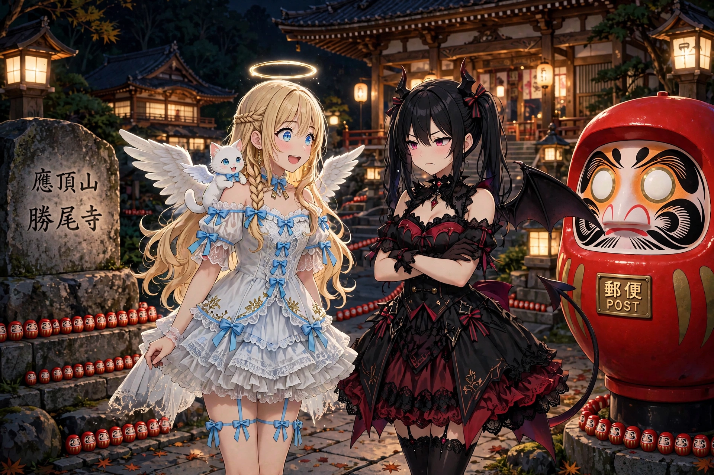
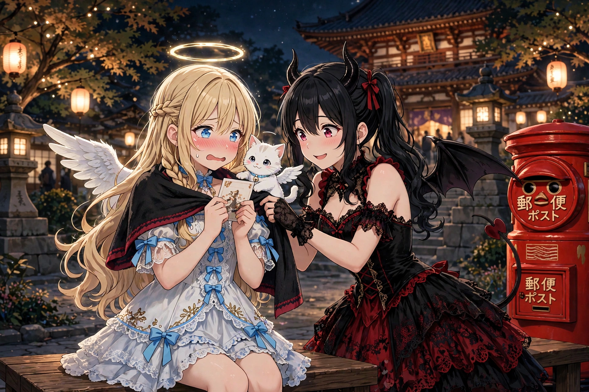
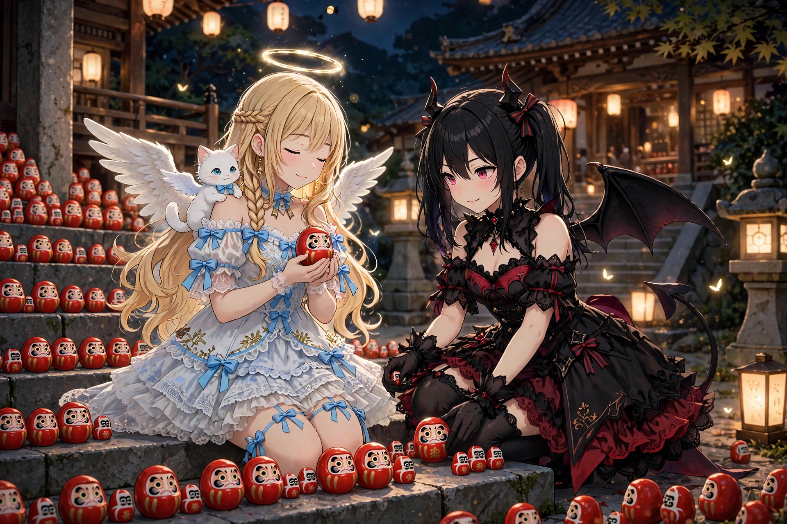
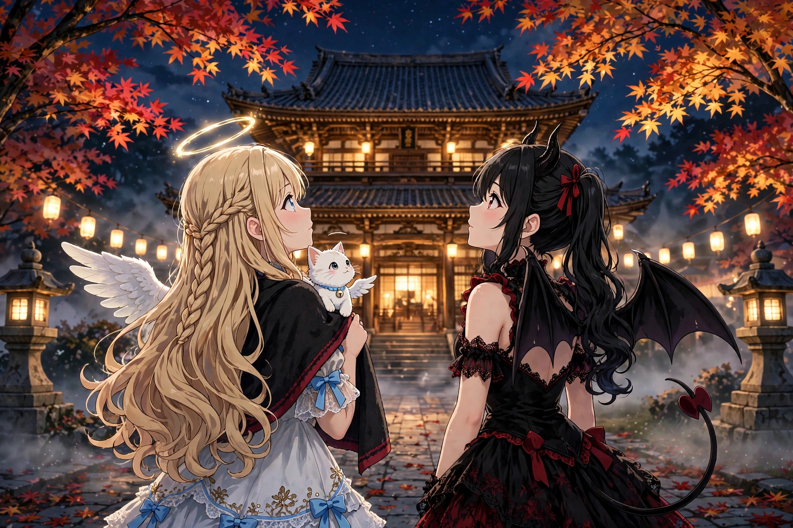

読み切り短編『勝ちダルマに、手紙を出して』を公開しました
2026年11月8日
読み切り短編『勝ちダルマに、手紙を出して』を公開しました。ルチアと、ライトアップの勝尾寺へ夜詣りに行った日のお話です。
1. 夜の山の、明かり

「まだ登るの……」
「もう少しですよ、ルチア。ほら、明かりが見えてきました」
夕暮れの山道を登って、わたしたちは勝尾寺に来ました。箕面の山の中にある、「勝ちダルマ」のお寺です。今夜はライトアップの日。闇の中に、お寺の明かりが浮かんで見えました。
門の前で、わたしは足を止めました。
「わあ……大きな、ダルマさん」
「何よこれ。ポスト……？」
真っ赤で、まるまると大きなダルマの形をした郵便ポスト。お腹のところに、投函口がありました。門の横の石碑には「應頂山 勝尾寺」の文字。
「本物のお手紙が、出せるんですね……」
「あんた、まさか」
「出します。天界に、近況報告を」
わたしの目が輝いたのを、ルチアは見逃しませんでした。
2. 天界への、近況報告

売店で絵はがきを買って、わたしはベンチで手紙を書きました。宛先は、ガブリエラ先輩です。
――先輩、お元気ですか。わたしは地上で元気にやっています。日本橋の街にも、だいぶ慣れました。今日はお城のお祭りで、火縄銃の音に翼が膨らんでしまいました。笑わないでくださいね。それから、悪魔のルチアと一緒に、夜のお寺に来ています。ルチアは、悪い悪魔じゃありません。……たぶん。
「何書いてるの。見せなさい」
「だめです。お手紙は、秘密です」
「ふん。どうせ、あたしの悪口でしょう」
「違いますよ。……『悪い悪魔じゃありません』って、書きました」
「余計なお世話！」
赤いポストに、はがきをそっと入れました。ことん、と小さな音。五百年ぶりの地上暮らしの報告は、夜の山のポストから、天界へ――本当に届くかどうかは分かりません。でも、出すことに意味があるのだと、思うのです。
モコは石碑の根元に並んだ小さなダルマたちを、じっと見つめていました。
3. 小さなダルマと、願いごと

勝尾寺の境内には、小さなダルマが、あちこちに置かれています。ダルマみくじを引いた人たちが、願いを込めて置いていくのだそうです。石段の脇、木の根元、お堂の前。数えきれないほどの、小さな赤いダルマ。
「わたしも、引きます」
「あんた、運勢なんて、自分で切り開くものでしょ」
「ルチアこそ、さっきから気になってるくせに」
二人で引いたダルマみくじ。わたしは小さなダルマを手のひらに乗せて、願いごとをしました。内緒です。……でも、少しだけ言うと、「来年も、みんなと笑っていられますように」です。
ルチアも、自分のダルマを、石段の脇にそっと置いていました。
「ルチアの願いは、何ですか」
「秘密。……悪魔の願いはね、大事に取っておくものなの」
「当てていいですか。……『セラフィナに、勝てますように』？」
「……図星のくせに、言うな」
勝ちダルマのお寺で、悪魔が願った小さな意地。わたしは、なんだかうれしくなりました。
4. 光の夜詣り

ライトアップされた境内は、静かで、とてもきれいでした。照らされた紅葉と、お堂の灯り。昼間のにぎやかなお祭りとは違う、しんとした夜の美しさ。
「お祭りの夜もいいですけど……こういう静かな夜も、いいですね」
「……まあ、悪くないわね」
帰りの山道、振り返ると、お寺の明かりが遠くに見えました。わたしの手紙と、二人のダルマを残してきた場所。
「今日もおつかれさまです、ルチア」
「……帰ったら、熱いお茶、淹れてよね」
勝ちダルマに手紙を出して、小さな願いを置いてきた夜。勝つことより、願うことの方が、ずっと大事な気がした夜でした。
（了）